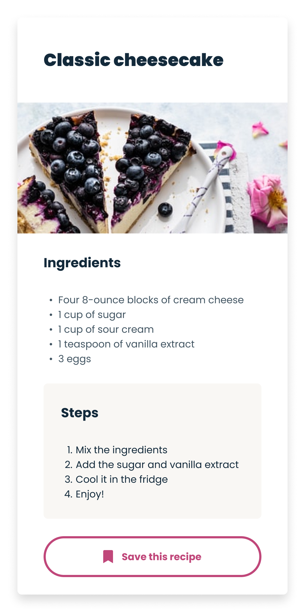

Classic cheesecake
Ingredients
Four 8-ounce blocks of cream cheese
1 cup of sugar
1 cup of sour cream
1 teaspoon of vanilla extract
3 eggs
Steps
Mix the ingredients
Add the sugar and vanilla extract
Cool it in the fridge
Enjoy!
Save this recipe
